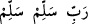
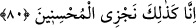
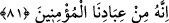

al! Biz senin ismini yâd eden hiç kimseye zarar vermeyeceğimize söz veriyoruz”
dediler. Kuşeyrî der ki, bu nedenle yılan ve akrebin kendisine zarar vereceğinden
endişe eden kimse “Bütün âlemlerde Nuh’a selâm olsun!” âyetini dua olarak okursa
yılan ve akrep bu kimseye zarar vermez.
et-Te’vîlâtü’n-Necmiyye’de der ki: Bu âyetin işârî yorumu şudur: Allah Teâlâ’nın
selâmını hak eden esasen insan ruhunun Nûh’udur. Zira Allah Teâlâ bütün âlemlerde
insandan başka hiçbir varlığı selâmlamamıştır. İşte mîraç gecesinde Allah Teâlâ “Ey
yüce Nebi! Allah’ın selâmı rahmeti ve bereketi senin üzerine olsun.”[211] diyerek Hz.
Peygamber (s.a.)’i selâmlamıştır. Hz. Peygamber (s.a.) bu selâma “Allah’ın selâmı bize
ve Allah Teâlâ’nın salih kullarına olsun” diyerek icabet etmiştir. Mesela buna Hz.
Peygamber (s.a.) “Allah’ın selâmı bize ve Allah’ın sâlih kullarına” dedikten sonra “ve
senin mukarreb meleklerinin üzerine olsun” dememiştir. İnsan başkalarının yüz
çevirdiği ağır teklif ve sorumluluk emanetini yüklendiği için bütün âlemler arasında
selâm insana özel olmuştur. Sonuçta bu ağır emaneti kıldan ince kılıçtan keskince olan
sırat üzerinden sağ salim geçirebilmek için insan Allah’ın selâmına herkesten daha çok
muhtaçtır. Bundan dolayı Hz. Peygamber (s.a.) “O gün sırat köprüsünde dâvetine icâbet
edilmeyen peygamberlerin duası “__WORD__ yani “Allahım kurtar, Allahım kurtar”
şeklinde olacaktır.” buyurmuştur. İnsandan başka hiçbir varlığın sırat köprüsünden
geçeceği duyulmamıştır. İnsanlar emaneti, emanetin gerçek sahibi olan Allah’a eda
edeceklerinden sırattan geçiş insana özel bir durumdur. Buna göre insan, kendisini
emaneti eda edeceği yere ulaştıran sırat köprüsünden geçmek zorundadır.
80. İşte biz iyileri böyle mükâfatlandırırız.
“İşte biz iyileri böyle mükâfatlandırırız.” Yani duasının kabulü, zürriyyetin devamı,
güzel yâd edilme ve âlemlerin ebedi olarak selâm okuması gibi ihsanda kâmil olanları
böyle ödüllendiririz. Bundan daha aşağı yapmayız. Bu söz, Nuh (a.s.)’a yapılan bu
büyük iyilik ve lütfun onun ihsanına karşı bir ödüllendirme olduğunun gerekçesini beyan
etmektedir.
81. Zira o, bizim inanmış kullarımızdan idi.
Bu söz, Nuh (a.s.)’ın, kâmil imanı ve halis ibâdetiyle muhsinlerden olduğunun
gerekçesidir. Yine burada imanın kadr u kıymetinin yüceliği ile asalet ve önemi ortaya
konulmakta, imanın tahsiline ve imanda sabit ve daim olmaya teşvik edilmektedir.